Piedras de Afilar Profesionales Siwhal.
Logra filos muy agudos y pulidos sin rayar ni dañar el acero de tus herramientas. Únicas en el mercado. Un cambio de paradigma que ofrece un acabado de estándar HHT (corte de vellos en el aire).
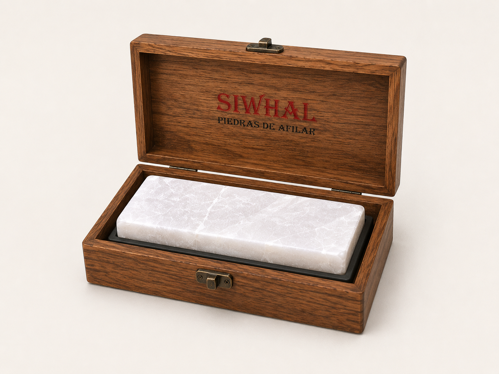
"El cambio de paradigma en el mantenimiento de herramientas de corte."
Ingeniería en Piedra Natural
Doble Cara
Diseño de 2 caras que cubre casi todos los aspectos del afilado. Tamaño mediana/grande con 1.8 cm de espesor sólido. Rango de 600 a 12,000.
Cara Gruesa (Gris)
600 a 3000 GRITIdeal para semi desbaste y afilado medio, preparando el acero para la etapa final de precisión.
Cara Fina (Ultrafino)
3000 a 12000 GRITAfilado fino, pulido espejo y asentado. Logra el legendario estándar HHT (corte de vello en el aire).
Dientes Diamantados
Incluye 2 dientes diamantados: Oscuro (grueso) para la cara de 600 y Claro/Azul (fino) para la de 12,000. Generan "barrillo" para acelerar el proceso.
Inmunidad a la Deformación: Optimización de CAPEX
A diferencia de las piedras convencionales, Siwhal no requiere ser aplanada (no ahuecamiento). Su dureza extrema evita deformaciones, eliminando la necesidad de adquirir placas de aplanado.
Sistema Profesional Siwhal
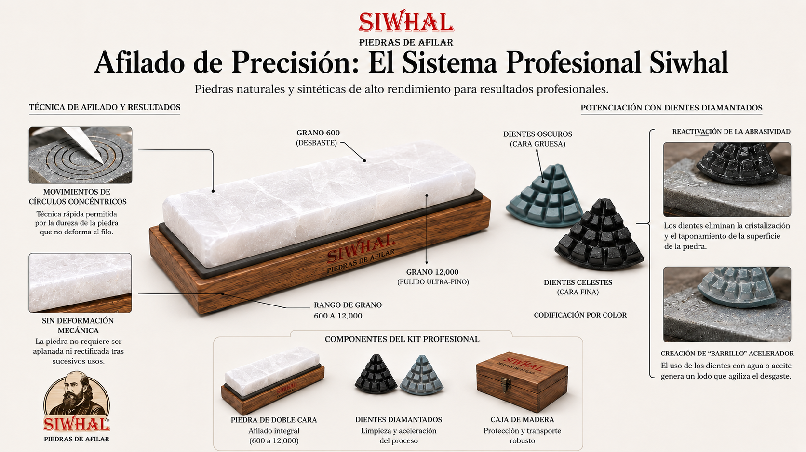
Técnica de Círculos Concéntricos
La extrema dureza de la piedra natural Siwhal permite la aplicación de movimientos circulares de alta fricción con fuerte presión lateral. Esta técnica, imposible en piedras blandas que se dañarían, acelera dramáticamente el proceso de afilado.
Demostrado en pruebas de campo, la técnica ha permitido alcanzar el estándar HHT en navajas "Gold Dollar" en tiempo récord, validando la superioridad técnica del sistema Siwhal sobre métodos tradicionales.
Movimiento de Alta Fricción
Círculos concéntricos que aprovechan la dureza inalterable de la superficie para un desbaste rápido y preciso.
Especificaciones Técnicas
| Característica | Especificación Técnica | Ventaja Operativa |
|---|---|---|
| Rango de Granulometría | 600 (Gris) a 12,000 (Ultrafino) | Versatilidad total de desbaste y pulido en una sola unidad. |
| Estabilidad Estructural | Composición de alta densidad | Inmunidad a la deformación; elimina la necesidad de rectificado. |
| Ergonomía de Campo | 13 - 14 cm | Dimensiones optimizadas para portabilidad y control manual. |
| Protección de Activos | Caja de madera robusta | Almacenamiento seguro que previene fracturas y contaminación. |
Rentabilidad y Optimización
Optimización de CAPEX
Reducción drástica de la inversión inicial al eliminar la necesidad de comprar granos intermedios y herramientas de rectificación. Un solo sistema reemplaza 4-5 piedras tradicionales.
Logística Simplificada
La caja de madera robusta minimiza la huella física en el puesto de trabajo y facilita el transporte para servicios a domicilio o capacitaciones.
Eliminación de Tiempos Muertos
Se erradica el proceso improductivo de aplanado. El profesional dedica el 100% de su tiempo al cliente, maximizando la capacidad de atención diaria.
Sustentabilidad con Dientes Diamantados
Limpieza y Restauración
Dientes oscuros (gruesos) para la cara 600 y celestes (finos) para la cara 12,000. Eliminan la cristalización y recuperan el estado óptimo del activo.
Creación de "Barrillo"
Al frotar los dientes se genera una suspensión abrasiva que aumenta drásticamente los puntos de corte activos por cm², permitiendo un afilado mucho más agresivo y rápido.
Protocolo de Mantenimiento
Versatilidad total: funciona en seco, con agua como lubricante o mediante aceite mineral. La piedra recupera su máximo potencial bajo cualquier condición.
Precisión Extrema: Estándar HHT
El nivel de afilado alcanzado permite superar los estándares convencionales y alcanzar la validación definitiva: el "corte de cabello en el aire" (Hanging Hair Test).
Eficiencia Temporal Crítica
Reducción drástica de los ciclos de mantenimiento, permitiendo mayor rotación de servicios por jornada.
Costos de Capital
Eliminación de inventario redundante y supresión del costo de reemplazo de accesorios de rectificación.
Calidad Superior
Capacidad constante de ejecutar cortes "en el aire", elevando el valor percibido del servicio y satisfacción del cliente.
Tienda Oficial
Adquiere hoy la herramienta definitiva.
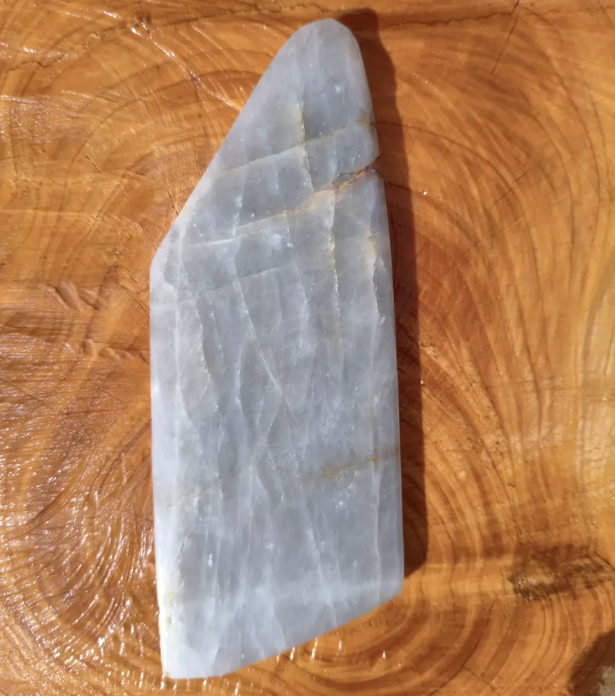
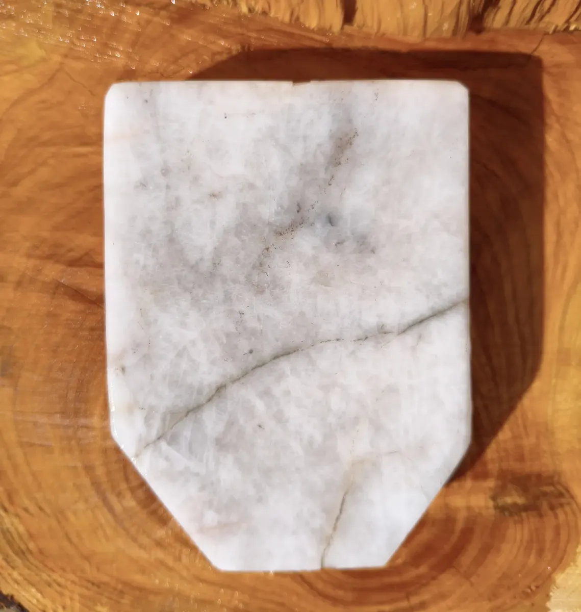
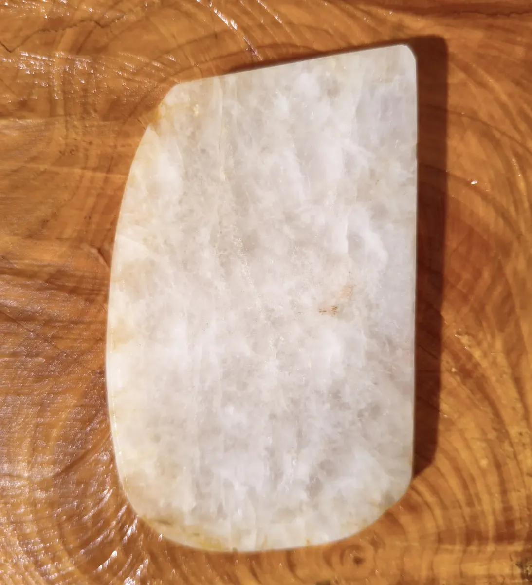
Piedra De Afilar Profesional Siwhal
Piedra natural de doble cara + 2 dientes diamantados estratégicos para generar barrillo. La solución definitiva para un afilado de estándar HHT.
Especificaciones
- MarcaSiwhal
- SistemaPiedra Natural Doble Cara
- MaterialPiedra Natural de Alta Dureza
- Extras2 Dientes Diamantados
- UsoTodo tipo de herramientas de corte
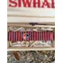
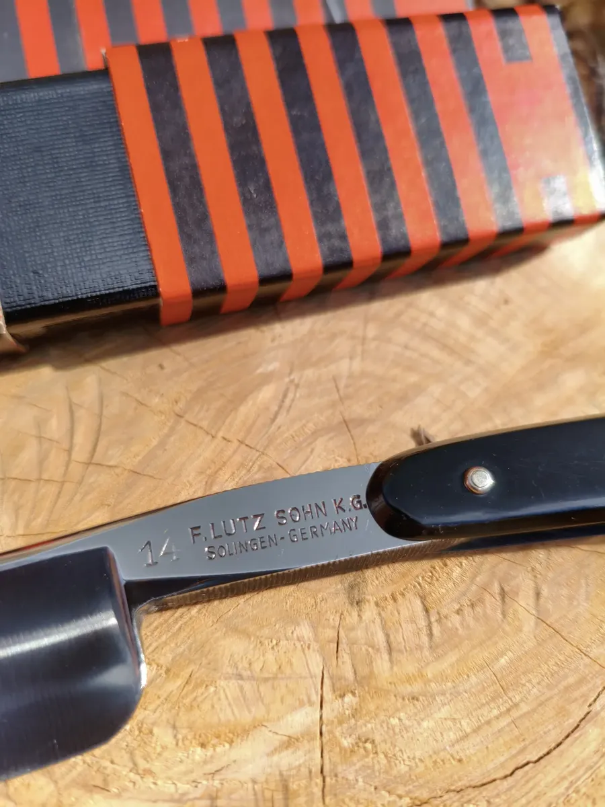
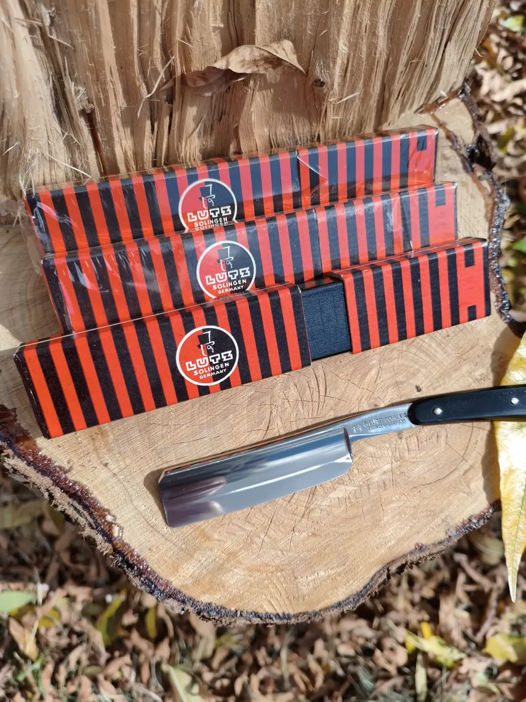
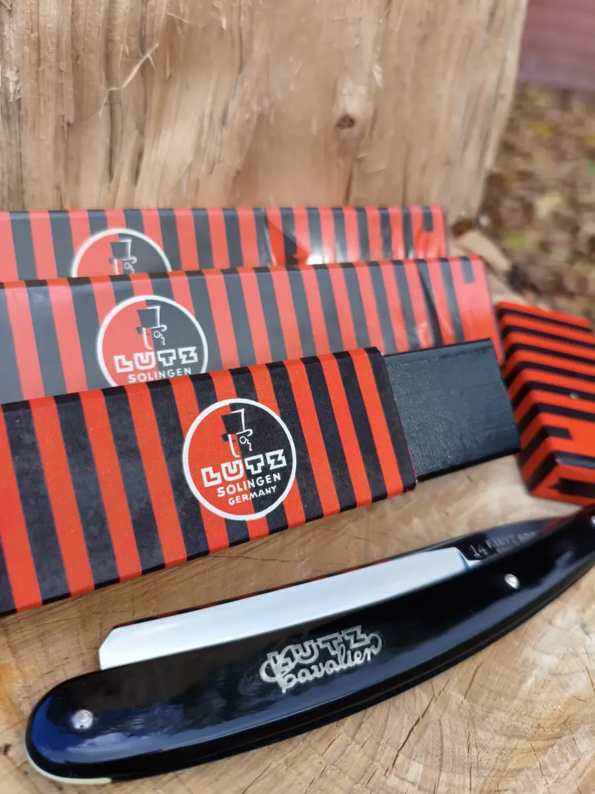
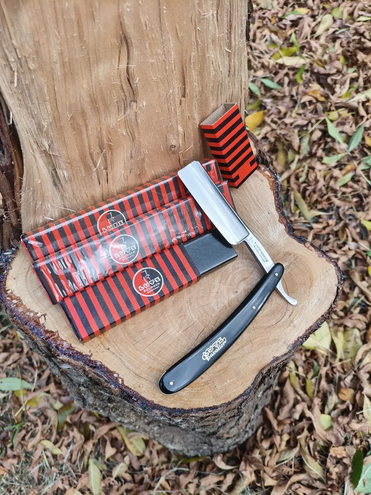
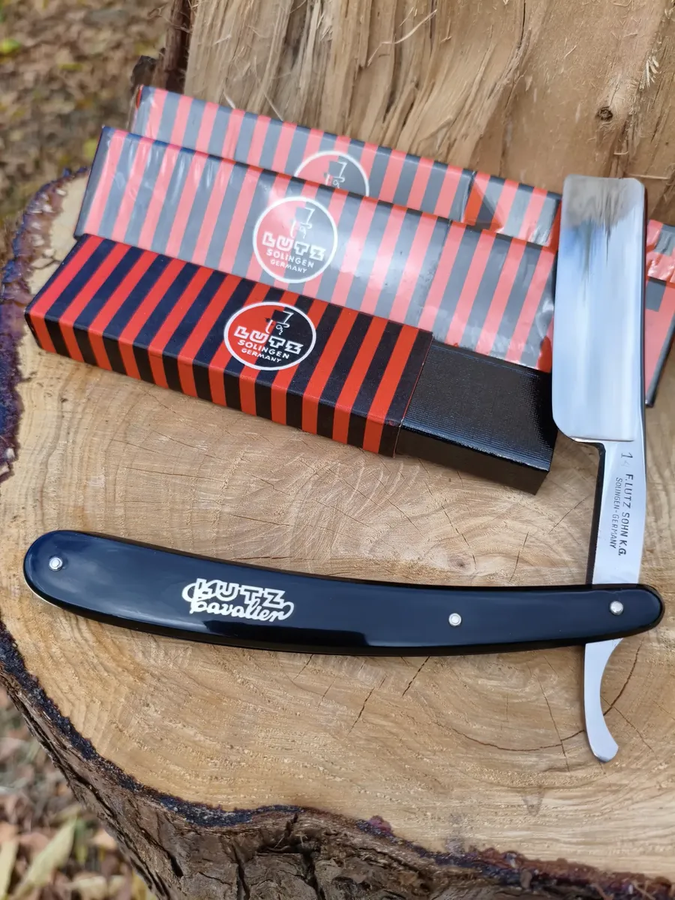
Navaja De Afeitar Antigua
Navaja barbera Lutz Cavalier número 14, fabricada entre los años 1920-1960 en la ciudad de Solingen Alemania.
Están completamente nuevas, en su paquete original, nunca han sido usadas ni su caja ha sido abierta, como se puede observar en algunas de las fotos tienen hasta el plástico que recubre su caja.
Vienen afiladas para afeitar (cortan cabellos en el aire) solo se deben asentar en cuero limpio antes de cada uso.
Están hechas de un acero de muy alta calidad cuya retención de filo asombra, les puedo asegurar que si es bien limpiada luego de cada uso y pasada por cuero antes de afeitarse no van a necesitar piedras ni cuero con pasta abrasiva porque retiene mucho su filo de fábrica (lo digo por experiencia propia).
Poseo un stock muy limitado de estas navajas, no pierdan la posibilidad de tener su primera navaja alemana número 14 a estrenar.
shopping_cart Ver en Mercado LibreEspecificaciones
- FabricanteSolingen, Alemania
- MarcaLutz Cavalier
- Modelo14
- CondiciónNueva - Packaging original
Contáctanos
¿Tienes dudas sobre la técnica de afilado o quieres saber más sobre nuestras piedras naturales? Nuestro equipo de maestros afiladores está listo para asesorarte.